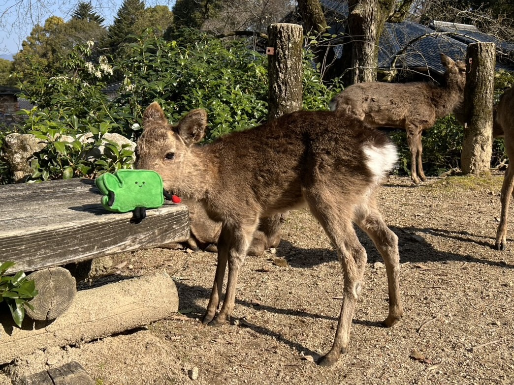

Tacoma KAIWA
Circle
Let's practice speaking Japanese!
Come Hang Out!
Tacoma KAIWA Circle is a casual, welcoming space to meet people and enjoy conversation in Japanese. Whether Japanese is your first language or a language you're learning, you're welcome here. No lessons, no pressure.
About organizer:
I'm a Japanese native speaker who moved to Tacoma this August. I work from home and I want to meet new people in Tacoma (: I've been leaning English for a long time, so I know how hard it is to learn a new language.Upcomming Meeting
I plan to meet up to chat at a cafe in downtown Tacoma.
(I’m thinking of making it a monthly or biweekly thing. This is my first time organizing something like this, so I’ll see how it goes!)
When
📅 November 14th Saturday
🕑 01:00pm - 02:00pm
Where
📍 Ebony and Ivory Coffee
🗒️ 1145 Broadway, Tacoma, WA 98402
Required:
- Please RSVP using the Google Form below.
- Around N4 level or above is recommended since we'll be chatting in Japanese for about an hour.(または、１時間日本語で話す勇気がある人)
- If you're interested but still a beginner, feel free to reach out! I may be able to organize a separate meet up for beginners.
I'll bring my Washington-kun plushie and put him on the table, so keep an eye out for him!

⚠️RSVP Closed for November 14th (Update: November 12, 2026)
Thankfully, I've had a lot of people sign up for our first meetup! Since this is my first time organizing an event, I've decided to close RSVPs for now.
I'll add more meetup dates after our first meetup on November 14th.
I've also heard from a few beginners who are interested in practicing Japanese, so I'll definitely organize some beginner-friendly meetups too!
すみませんが、よろしくおねがいいたします🥲
Stay Connected!
Want to hear about future meetups and events? Sign up for our mailing list!
Stay Updated! (Google Form)Looking forward to meeting you!